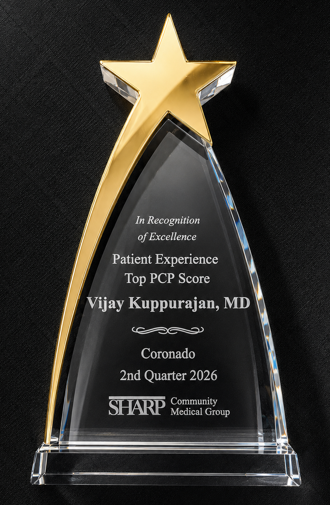
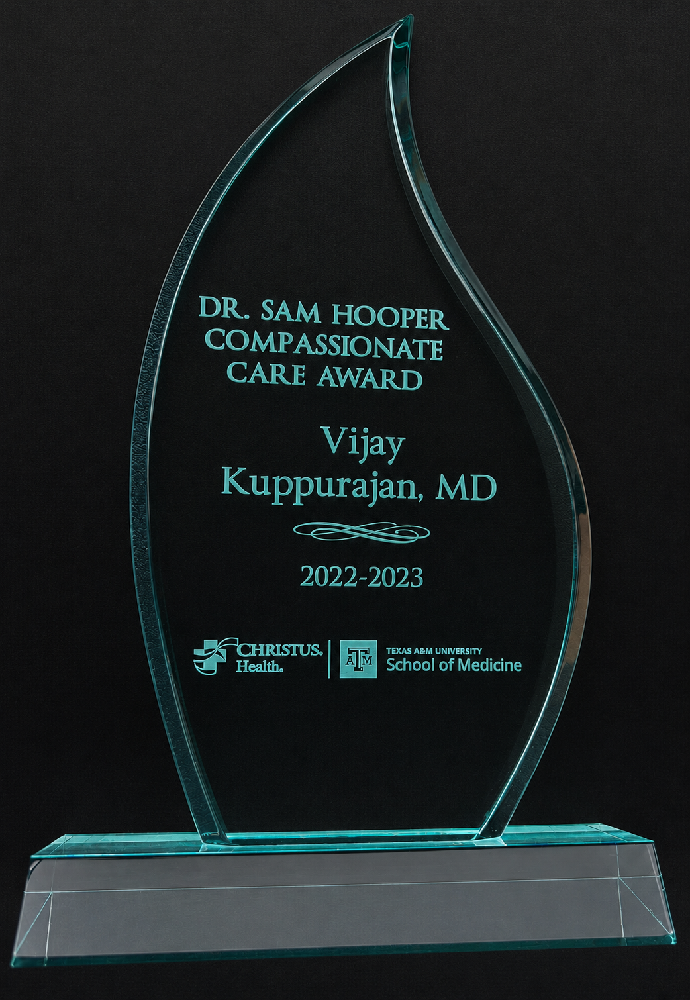

Patient-Centered Medical Home
Your Wellness Journey Starts Here



Sharp Community Medical Group
Dr. Vijay Kuppurajan, MD
Sharp's Top PCP · Board-Certified Internist
Where COMPASSION Encapsulates
Comprehensiveness, Competence, and Collaboration

Voted by peers & patients
Patient-Centered Medical Home
Core clinical offerings
Why choose Dr. Kuppurajan
Patient success stories
"Very effective, knowledgeable, and caring doctor. He takes the time to listen, explains things clearly, and genuinely cares about his patients’ well-being. I fully trust him with the health and welfare of myself and my family."
"From the moment you walk in you feel welcome. The front desk staff are friendly, efficient and wait time is minimal. Dr. Kuppurajan was very patient and took the time to listen to my concerns. Highly recommend this office for anyone looking for medical care."
"La atencion que recibi de parte de todo el personal desde la recepcion, enfermera, y doctor fue atento y amable. Es un lugar muy acogedor, donde se puede sentir que se preocupan por tu bienestar."
"The attention I received from all the staff - from the reception, nurse, and doctor - was attentive and kind. It is a very welcoming place, where you can feel that they care about your well-being.
FIRST VISIT PREPARATION
Your Questions, Answered
Answers about Dr. K, insurance, services, hours, and more, all in one place on our FAQ page.
Go to the FAQ Page ↗Take the next step
Recognized as Sharp's Top PCP, Dr. Kuppurajan is ready to welcome you into our medical home and establish your personalized wellness plan.
Find Us
Serving Imperial Beach, Coronado, and South San Diego communities. We proudly accept traditional insurances for Seniors, Sharp-SCMG's Advantage plan, and most major PPOs.
Next to Hampton Inn & Suites (Corner of Palm Ave & 7th)
✅ ADA Compliant · Free On-Site Parking
Mon-Thu: 8am-5pm | Fri: 8am-12pm (Noon)
🚌 MTS Bus Routes 933 / 934